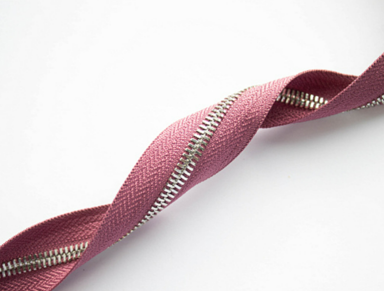
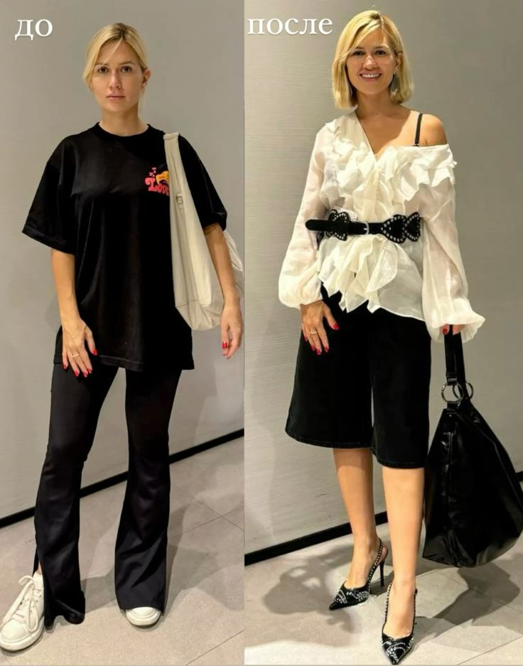
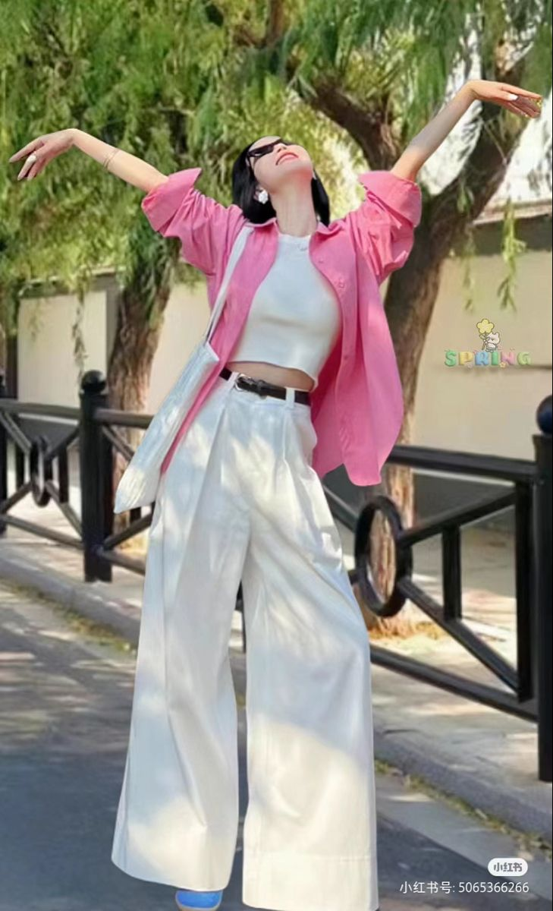
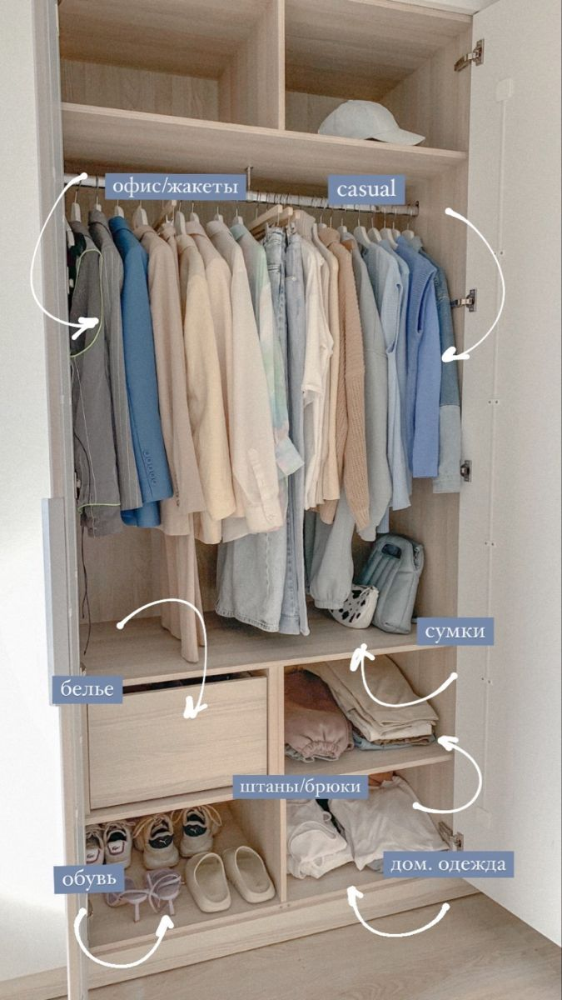

☰
0





Чтобы вещь прослужила годы, обращайте внимание на этикетку:
Состав ткани — лучше выбирать натуральные материалы (хлопок, лён, шерсть) или их смеси с небольшим
добавлением синтетики для прочности.
Процент волокон — чем выше содержание качественного материала, тем долговечнее изделие.
Рекомендации по уходу — если вещь требует только химчистки или очень деликатной стирки, она может быть менее
практичной.
Качество пошива — ровные швы и плотная ткань обычно означают долгий срок службы.
Этикетка помогает понять, будет ли вещь носиться один сезон или прослужит несколько лет.
Правило 80/20: как составить гардероб, где всё сочетается.
Правило 80/20 в гардеробе означает:
80% — базовые вещи, которые легко сочетаются между собой,
20% — акцентные, которые добавляют стиль и индивидуальность.
🔹 80% — база:
Нейтральные цвета (чёрный, белый, бежевый, серый), простые фасоны и качественные ткани.
Например: базовая футболка, классические брюки, джинсы, пиджак, лаконичное платье.
🔹 20% — акценты
Яркие цвета, трендовые модели, необычные аксессуары, принты.
Именно они делают образ интересным.
Почему это работает?
Все вещи легко комбинируются между собой.
Меньше «нечего надеть».
Гардероб становится практичным и стильным одновременно.
Так вы создаёте продуманную систему, где почти каждая вещь подходит к нескольким образам.
Правило 80/20 в гардеробе означает:
80% — базовые вещи, которые легко сочетаются между собой,
20% — акцентные, которые добавляют стиль и индивидуальность.
🔹 80% — база:
Нейтральные цвета (чёрный, белый, бежевый, серый), простые фасоны и качественные ткани.
Например: базовая футболка, классические брюки, джинсы, пиджак, лаконичное платье.
🔹 20% — акценты
Яркие цвета, трендовые модели, необычные аксессуары, принты.
Именно они делают образ интересным.
Почему это работает?
Все вещи легко комбинируются между собой.
Меньше «нечего надеть».
Гардероб становится практичным и стильным одновременно.
Так вы создаёте продуманную систему, где почти каждая вещь подходит к нескольким образам.
Модные показы часто задают тренды, но не всегда такие образы легко носить в обычной жизни. Однако элементы подиумной моды можно адаптировать для повседневного стиля. Главное — правильно сочетать трендовые вещи с базовой одеждой.
Так тренды становятся частью повседневности, а не только эффектом для модных показов.
Аксессуары играют важную роль в создании стильного образа. Даже простая одежда может выглядеть намного интереснее, если добавить правильно подобранные детали.
Главное правило — не перегружать образ. Иногда одного яркого аксессуара достаточно, чтобы сделать стиль более выразительным.
Современная мода всё чаще обращает внимание на устойчивое потребление. Ресейл и апсайклинг помогают уменьшить количество отходов и дают вещам вторую жизнь. Вместо того чтобы выбрасывать одежду, люди всё чаще продают, покупают или переделывают вещи, создавая уникальные образы.
Ресейл — это повторная продажа вещей. Это могут быть брендовые вещи, которые сохранили хорошее состояние, или просто одежда, которая больше не нужна владельцу. Такой подход помогает экономить деньги и уменьшать вред для окружающей среды.
Апсайклинг — это творческая переработка вещей. Старую одежду можно переделать, украсить или изменить её форму, создав совершенно новый предмет гардероба.
Ресейл и апсайклинг становятся важной частью современной моды. Они помогают людям относиться к одежде более осознанно и создавать стильные образы без вреда для природы.